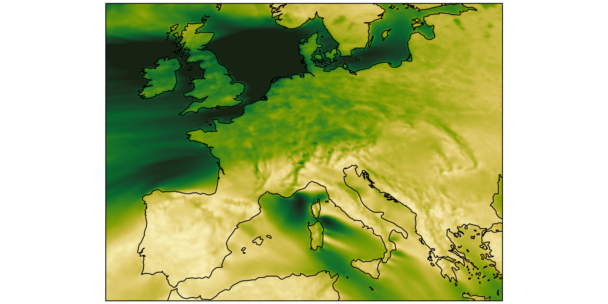
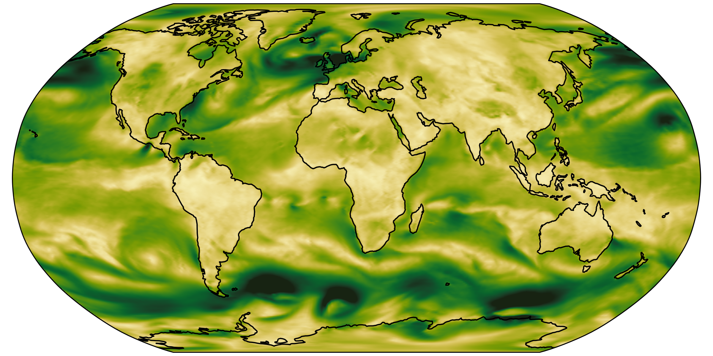
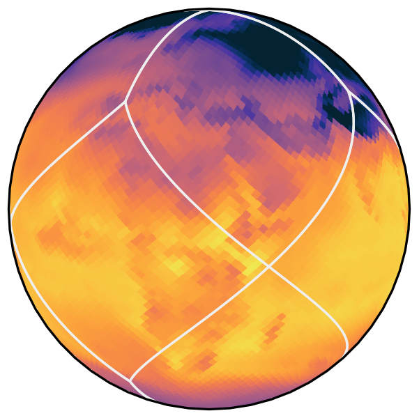
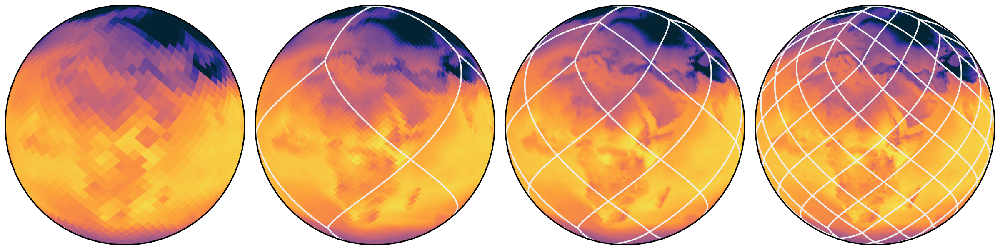
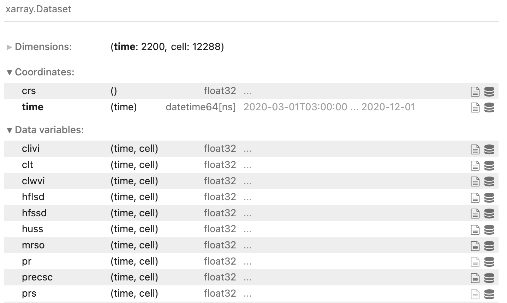

2025-05-12
(Code)
Loading less data


Both plots have the same number of pixels.
You should load the same amount of data to make them.

Refinement by splitting each cell into four finer cells
Call it by its name, not by the location
cat["casesm2_10km_cumulus"].to_dask()
instead of
xr.open_dataset("/lustre/persons_name/experiments/attempt7/outdata/data_*_74_b.nc")
No need to know where data is.
Parameterize variants
cat["casesm2_10km_cumulus"](zoom=5, time="PT3H")
'/data2/share/florain/CAS-ESM2_10km_cumulus_3d6h_z9.zarr' # Mapmaking
import cartopy.crs as ccrs
import cartopy.feature as cf
ds = cat[name](zoom=9, time="PT3H").to_dask()
projection = ccrs.Robinson(central_longitude=120)
fig, ax = plt.subplots(
figsize=(8, 4),
subplot_kw={"projection": projection},
constrained_layout=True
)
ax.set_extent([70, 150, 18, 55], crs=ccrs.PlateCarree())
egh.healpix_show(ds.tas.isel(time=0),
ax=ax,
cmap=cmap)
ax.add_feature(cf.COASTLINE, linewidth=0.8)
ax.add_feature(cf.BORDERS, linewidth=0.4)https://easy.gems.dkrz.de/Processing/healpix/healpix_cartopy.html
ds = cat[name](zoom=7, time="PT3H").to_dask().pipe(egh.attach_coords)
Slim, Nlim = -15.0, 35.0
pr = (
ds['pr']
.where((ds["lat"] > Slim) & (ds["lat"] < Nlim), drop=True)
.groupby("lat")
.mean()
).coarsen(time=8).mean().transpose().compute()
pr.plot(cmap="Blues", vmax=0.0001)
plt.title(f"zonal mean precipitation (kg m-2 s-1)")https://easy.gems.dkrz.de/Processing/healpix/time-space.html